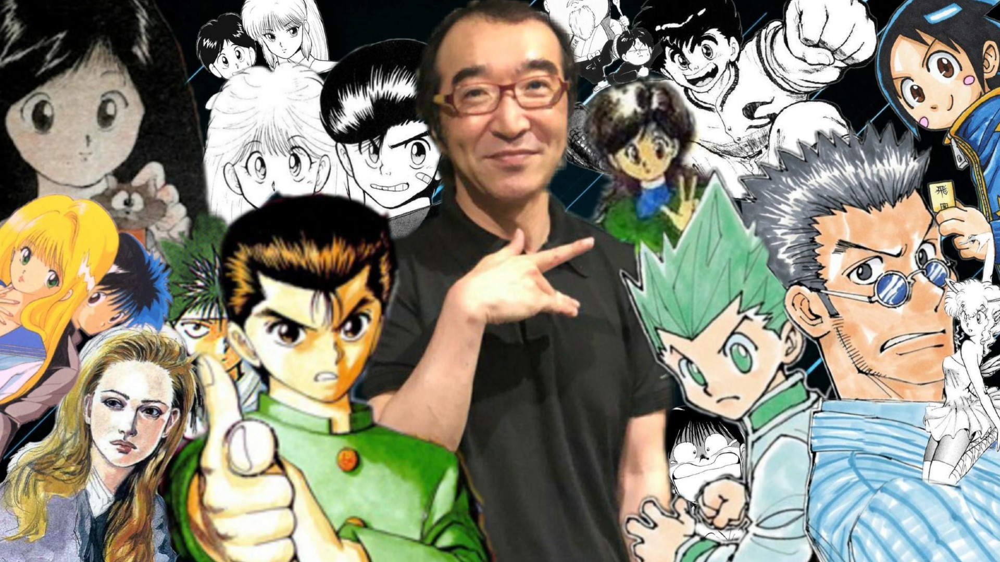

Yoshihiro Togashi
The Manga artist who sacrificed life and health for literary genius

This is an image of all the designs for characters which Togashi created while writing multiple successful manga.
Here is a time line of Togashi's life:
- 1966 - born in Yamagata, Japan
- 1986 - First published manga title Buttobi Straight
- 1990 - Came up with his first successful manga titled Yu Yu Hakusho
- 1994 - Recieved Shogakukan Manga Award and recieved anime adaption for Yu Yu Hakusho
- 1998 - Created a spiritual successor called Hunter x Hunter which recieved two anime adaptions